Đặc sản quê tôi
Bắc Ninh hình thành lâu đời gắn liền với nền Văn minh sông Hồng. Luy Lâu từng là trung tâm tôn giáo cổ xưa nhất của Việt Nam.
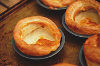Vùng quê Bắc Ninh không chỉ có những liền anh liền chị, những làn điệu dân ca lưu luyến. Nơi ấy còn có những đặc sản mang đậm hồn quê, mà khách du lịch tới thưởng thức luôn bị hấp dẫn bởi những món ăn đặc sản này. Mình xin giới thiệu cùng bạn đọc những đặc sản Bắc Ninh, mời bạn cùng tham khảo nhé!
Top 10 đặc sản ngon nổi tiếng ở bắc ninh
-
1 Bánh Phu Thê
Bánh phu thê (hay được gọi chệch là bánh xu xê hoặc bánh xu xuê) là một loại bánh ngọt cổ truyền của Việt Nam. Đình Bảng là nơi gắn bó với phát tích của triều Lý và là nơi đầu tiên làm ra loại bánh này. Vì sao lại sở hữu tên là bánh phu thê, chuyện kể rằng trong một lần hội làng ở Đình Bảng, Lý Thánh Tông cùng vợ là Nguyên phi Ỷ Lan về quê lễ ở Đền Đô đã được dân làng dâng một loại bánh. Sau thời điểm thưởng thức, Đức vua và Nguyên Phi đều phải khen ngon. Người nhận định rằng nếu được ăn bánh thì gia đình sẽ sự sung sướng. Từ đó, trong các đám hỏi của người dân Kinh Bắc nói riêng và người dân Việt Nam nói chung phải có mặt bánh phu thê.
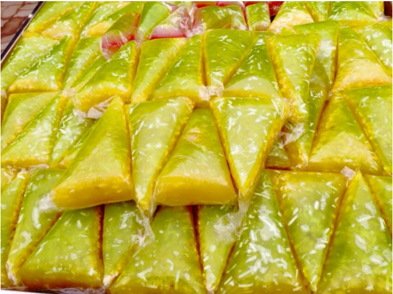Muốn có bánh ngon phải chọn loại gạo nếp cái hoa vàng thơm ngon. Màu vàng của vỏ bánh được tạo thành từ hoa dành dành. Người làm bánh đem hoa dành dành phơi khô, khi nào làm bánh thì ngâm vào nước sôi để chiết xuất nước có màu vàng, lấy nước này trộn vào bột để tạo màu bánh. Bánh được gói bằng hai thứ lá, bên trong là lớp lá chuối, ngoài cùng lá lớp lá dừa. Lá gói xanh tượng trưng cho việc chung thủy, lạt buộc hồng như tơ hồng kết nối, bánh màu vàng thể hiện tình yêu thương của vợ khi đối chiếu với chồng.
-
2. Bánh Khúc Làng Diềm
Đến làng Diềm du khách không chỉ được lắng nghe những câu quan họ mượt mà của liền anh, liền chị mà còn được thưởng thức chiếc bánh khúc xanh thơm, thắm đượm hồn quê dân dã. Làng Diềm là tên gọi gọi nôm của thôn Viêm Xá, xã Hòa Long, thành phố TP Bắc Ninh. Là ngôi làng cổ có đền thờ Đức Vua Bà, thuỷ tổ quan họ, từ lâu nơi đây đã trở thành điểm hẹn của du khách gần xa mọi khi muốn lắng nghe và tìm hiểu câu ca quan họ. Nhưng không chỉ có vậy, những ai có dịp đến đây, tất thảy đều không thể quên được món bánh khúc bình dị, thảo thơm của vùng quê Kinh Bắc. Bánh khúc làng Diềm không biết xuất hiện từ bao giờ, chỉ biết trong những ngày lễ tết, hội hè, rằm hay mùng một, bánh mới được làm để mời họ hàng, quan khách.
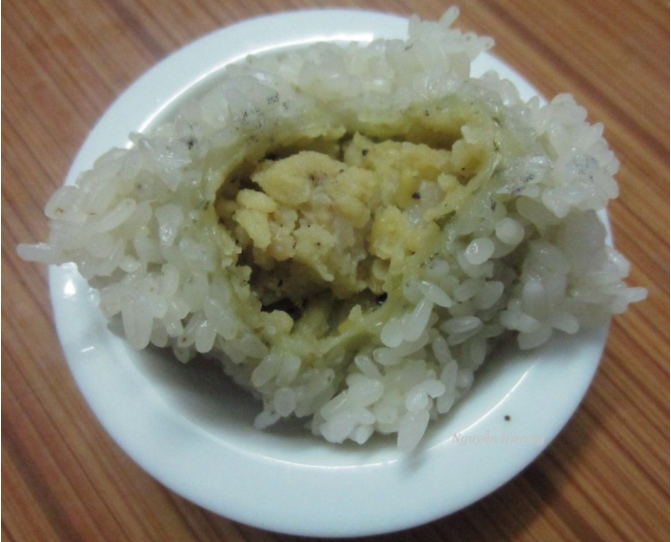Bánh khúc làng Diềm có hai loại nhân hành và nhân đỗ, bánh khúc nhân đỗ có vị bùi của đỗ, vị ngậy của thịt mỡ và thơm của hạt tiêu. Bánh khúc nhân hành có khác hơn đôi chút. Hành được sử dụng làm nhân bánh khúc nhất thiết phải là hành khô, thêm vào đó mộc nhĩ, hạt tiêu, rau răm, thịt ba chỉ băm nhỏ trộn lẫn với nhau.Bánh khúc làng Diềm là việc kết hợp mặn mà của rất nhiều sản vật thiên nhiên, từ cái dẻo thơm của nếp cái hoa vàng, vị bùi của đỗ xanh sánh quyện cùng vị béo của thịt ba chỉ. Tất cả được dung hòa bởi vị mát lành, nồng ấm của một loại rau tạo sự mùi vị đặc trưng của bánh – rau khúc
-
3. Nem Làng Bùi
Nem Bùi làng Bùi Xá có truyền thống cả trăm năm nay cũng là thứ đặc sản nổi tiếng được người Kinh Bắc giữ gìn nguyên vẹn.Trải qua bao thăng trầm, vài năm trở lại đây nem Bùi dần có mặt trên thị trường và trở thành món quán ăn ngon, rẻ, đồng thời là món quà trao tay ý nghĩa cho bạn bè, người thân sau mỗi dịp ghé thăm TP Bắc Ninh.
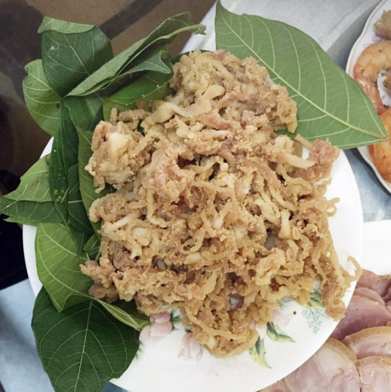Là một món ăn ít kén người nên chúng ta cũng có thể ăn nem Bùi vào bất kì thời điểm nào trong thời gian ngày. Dù là một món ăn chơi chứ không phải ăn no, nhưng vào giữa trưa, với thời tiết hanh nắng thì chiếc nem bùi cùng ly bia mát lạnh là lựa chọn lý tưởng. Nem sử dụng trong thời gian ngày là ngon nhất, nếu để trong tủ lạnh thì được 2 – 3 ngày. Thực khách có thể tìm mua nem Bùi ở TP Bắc Ninh. Nổi bật là dọc trên hàng phố quốc lộ chạy từ Cầu Hồ – Thuận Thành đi Thành Phố Hải Dương đâu đâu cũng thấy biển hiệu bán nem Bùi.
-
4. Trương Đình Tổ
Mùi vị thơm ngon, bình dị đã chiếm hữu được cảm tình của nhiều người đây chính là món tương của làng Đình tổ. Tương Đình Tổ được làm từ nguyên liệu đây chính là ngô, ngoài ra còn tồn tại đỗ tương và gạo nếp cái hoa vàng. Tất cả đều được ủ và lên men tự nhiên không dùng bất kỳ một loại hoá chất hay men phụ trợ nào.
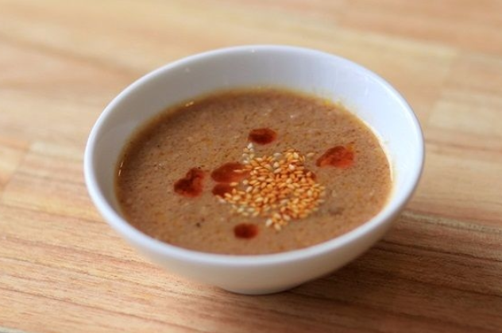
Vị đậm đà của tương Đình Tổ là việc hòa quyện của nhiều loại nguyên liệu đồng quê, cũng chính vì thế mà mùi vị món ăn này lại dân dã đến vậy. Hãy thưởng thức ngay món ăn này khi chúng ta đến với TP Bắc Ninh nhé! -
5. TRẦU TÊM CÁNH PHƯỢNG
Trầu têm cánh phượng là hình ảnh đẹp, gợi về truyện cổ tích Tấm Cám và tục ăn trầu đã trở thành tập quán, truyền thống của dân tộc bản địa Việt. Từ xa xưa, miếng trầu đã đi vào thơ ca, lịch sử một thời, cổ tích… phản ánh nhiều nét đẹp văn hóa truyền thống, thăng hoa tình cảm, tình yêu thương con người, hình thành văn hóa truyền thống vùng rõ rệt.
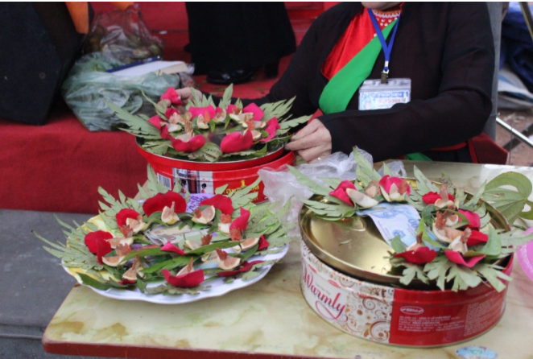
Nói đến trầu têm cánh phượng là nói đến miếng trầu vùng Kinh Bắc. Cũng vẫn nguyên liệu ấy, nhưng cách têm đẹp, kiểu cách, đã thể hiện sự khéo léo của những liền chị-người gái quê Kinh Bắc. Vì thế, miếng trầu có sức hấp dẫn đặc biệt quan trọng và để lại ấn tượng thâm thúy cho bất kì ai, dù chỉ một lần được mời. Trong giao tiếp ứng xử, “miếng trầu là đầu mẩu chuyện”. Miếng trầu thường gắn với lời chào và một thái độ của người mời khách. Người lịch sự không “ăn trầu cách mặt”, nghĩa là đã tiếp, thì tiếp cho khắp – “Tiện đây ăn một miếng trầu. Hỏi rằng quê quán ở đâu chăng là?”.Việc mời trầu cũng thể hiện sắc thái tình cảm tinh vi, tế nhị. Quý nhau mời trầu, ghét nhau theo phép lịch sự, cũng mời trầu. Ca dao có câu: “yêu nhau cau sáu bổ ba; ghét nhau cau sáu bổ ra làm mười”. Còn không có trầu mà tiếp khách vẫn mời trầu như Nguyễn Khuyến, là một trường hợp lạ – “Đầu trò tiếp khách, trầu không có. Bác bỏ đến chơi nhà, ta với ta”. Đặc biệt quan trọng nữa là miếng trầu hôi mời khách của Hồ Xuân Hương. Miếng trầu có cái gì thật khác thường, chất chứa đầy sự thử thách và một bản lĩnh của người mời.
-
6. CHIM TRỜI
Nói đến TP Bắc Ninh, người ta nghĩ ngay đến những làn điệu quan họ, những câu hát giao duyên “người ơi người ở đừng về…”, nhưng ở nơi đây còn tồn tại những món ăn rất dân dã mang đậm màu quê nhà như nem làng Bùi, bánh phu thê Đình Bảng, bánh tẻ làng Chờ… và không thể không kể tới đặc sản nổi tiếng chim trời.
Về thành phố TP Bắc Ninh, thực khách sẽ đơn sơ dàng nhận ra một phố dài với rất nhiều nhà hàng, quán ăn lớn có đặc sản nổi tiếng chim trời. Hầu như trước mỗi nhà hàng đều phải có những lồng lớn chứa chim, gà các loại để thực khách tha hồ chọn lựa. Những món ăn đặc sắc được chế biến từ chim phải nói đến việc là chim nướng, chim hấp, chim quay, xôi chim, vịt trời hầm sả và tiêu xanh, gà ác hầm thuốc bắc…
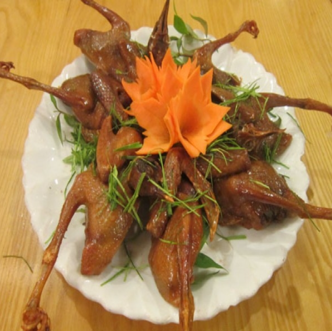Khách ngoại tỉnh, khách thủ đô, miền Trung cho tới miền Nam mọi khi có dịp qua đây đều rỉ tai nhau đi ăn chim trời một lần cho thấy. Mùa nào thức ấy, xuân ăn sẻ, gáy, sâm cầm, hạ ăn cuốc, cò, thu ăn ngói, rẽ giun, đông ăn vịt trời, ngỗng trời, le le với đủ món nướng, xào, hấp, luộc, quay, tiết canh, tiết hòa rượu…
-
7. CHÁO CÁ TÍCH NGHI
Cháo cá Tích Nghi là món ăn quen thuộc không chỉ của người dân xứ Kinh bắc mà còn của thượng khách khắp nơi đến thăm TP Bắc Ninh. Cháo Tích Nghi chỉ nấu với cá trắm và chú cá chép, bởi thịt thơm, rắn chắc. Cá phải to và được mua từ các ao hồ ở chính TP Bắc Ninh. Cá không nấu chung với cháo mà chỉ được thả vào nồi cháo vừa chín tới khi đã tẩm ướp rồi xào và mang ra hàng bán.
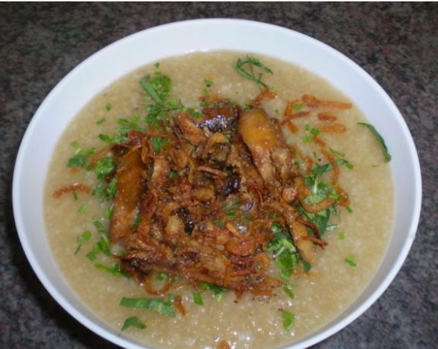
Chúng ta có thể tìm ăn món này ở nhiều quán ăn, với bát cháo cá bốc hơi nghi ngút, cháo sánh quyện đều thịt cá, có màu ánh vàng và rau thơm ở dưới. Điều đặc biệt quan trọng để vị cháo cá ngọt đậm đà đó là xương cá được giã ra để lấy nước dùng nấu cháo.Ăn cháo cá nhưng thực khách không hề cảm nhận thấy vị tanh. Đưa một thìa cháo lên miệng, các bạn sẽ cảm nhận được vị cháo tan trong miệng với vị thơm dẻo của gạo được ninh nhừ, từng thớ cá tươi, thịt chắc, ngọt quyện cùng với thứ rau gia vị thơm thơm như hành, mùi, thì là, tía tô và cả rau cải cúc. May mắn thì bạn còn thấy có cả trứng cá vàng ươm, bùi, ngậy. Người dân xứ Kinh Bắc cũng sẽ có cách ăn cháo cá riêng, đó là thêm giấm tỏi và ớt khô.
-
8. THỊT CHUỘT ĐÌNH BẢNG
Nói đến thịt chuột nhiều người sẽ có được cảm giác ghê sợ nhưng ở Đình Bảng đây lại được xem như là đặc sản nổi tiếng. Tuy không phổ biến như thịt chó, gà hay bò nhưng người dân TP Bắc Ninh vẫn sử dụng thịt chuột như một loại thức ăn thường ngày. Thậm chí còn không ít nhà còn bày trong mâm cỗ cưới món đặc sản nổi tiếng này.
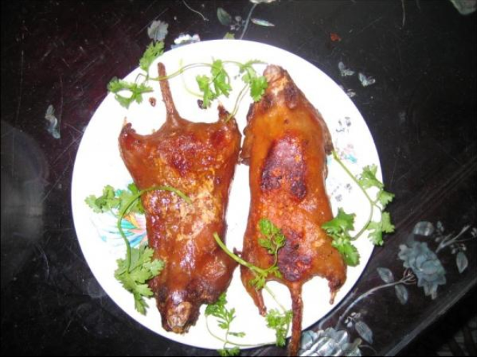
Trong quan niệm của người dân Đình Bảng xưa kia: “Cỗ Đình Bảng mà không có thịt chuột là không to”. Chỉ một câu nói ngắn gọn như này cũng đủ hiểu món thịt chuột “đặc biệt quan trọng” với những người dân nơi đây ra sao. Và nói theo cách khác cỗ thịt chuột ở Đình Bảng đã đạt tiêu chí thẩm mỹ và nghệ thuật quán ăn xứ Kinh Bắc ngàn năm văn hiến nên tiếng lành đồn xa là thế.Từ thịt chuột có thể chế biến được nhiều món ngon khác nhau như món chuột đồng nấu đậu, chuột nấu đông, chuột giả cầy, chuột rán, chuột xào chua ngọt hay sốt cà chua, khiến không ít người phải ứa nước miếng lúc các món được bày ra trước mắt. Nhưng có lẽ, ngon nhất và phổ biến nhất vẫn là món thịt luộc ép lá chanh. Người dân TP Bắc Ninh còn nhận định rằng ăn thịt chuột rất lành, có công dụng làm giảm đau, liền xương.
-
9. BÚN LÀNG TIỀN
Từ lâu, bún đã trở thành món ăn không thể thiếu trong đời sống của người dân Kinh Bắc nói riêng, toàn nước nói chung. Mỗi một khi thưởng thức món riêu cua, chả nướng… họ đều nhắc tới bún làng Tiền, xã Khắc Niệm, thành phố TP Bắc Ninh.
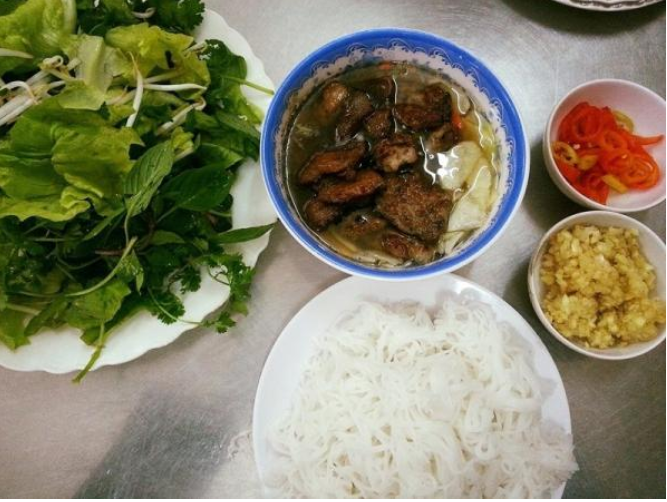Để đã chiếm lĩnh những sợi bún trắng trong, tươi ngon và dẻo dai như vây, người dân làng Tiền phải trải qua biết bao tiến trình phức tạp từ chọn gạo, xay bột, làm chín đến ép qua khuôn tạo sợi, tất cả thường rất tỉ mỉ và công phu.
-
10. BÁNH TẺ LÀNG CHỜ
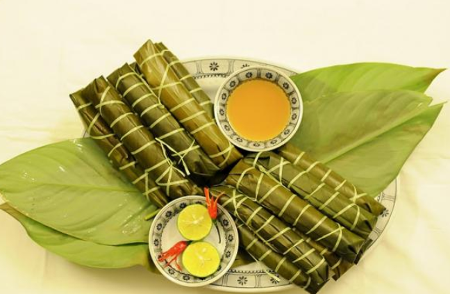Ai từng ăn bánh răng bừa (hay còn gọi là bánh tẻ), một thứ quà quê nổi tiếng của thị xã Chờ, huyện Yên Phong, tỉnh TP Bắc Ninh sẽ không còn thể nào quên được vị ngọt từ thịt, mùi thơm của hành, cái giòn của mộc nhĩ và sự dẻo thơm của bột bánh.
Bánh tẻ có nơi gọi là bánh lá hoặc bánh răng bừa vì có hình dáng giống cái răng bừa, là loại bánh truyền thống ở vùng đồng bằng Bắc Bộ. Bánh được làm từ bột gạo tẻ, gói ngoài bằng lá dong và được luộc chín. Bánh tẻ ăn lúc còn nóng vừa có độ giòn lại vừa có vị đậm, vị béo của nhân, nồng nàn của mùi lá, không thể lẫn vào thứ bánh tẻ nào khác được. Bánh khi ăn chấm với tương ớt hoặc nước mắm ớt, tùy sở thích của từng người.